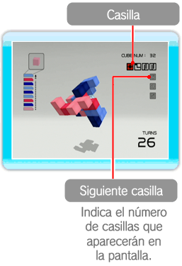
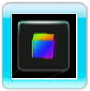
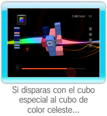
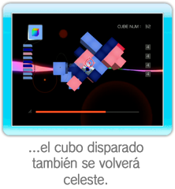
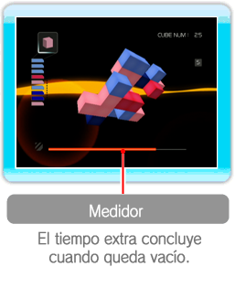

Las bonificaciones son períodos limitados durante los cuales puedes lanzar cubos
del mismo color tantas veces como quieras sin que se resten cubos de tu cargador.
● Inicio de la bonificación

Cada vez que elimines cubos del Cubello,
en la parte superior derecha de la pantalla aparecerán unas casillas con símbolos cambiantes.
Si quedan alineados símbolos idénticos, comenzará el período de bonificación.
El número máximo de casillas que puede aparecer es de seis,
dependiendo del número de cubos que elimines al mismo tiempo.
No olvides que, aunque aumente el número de casillas,
solo será necesario que se alineen cuatro símbolos iguales para que comience el período de bonificación.
● Período de bonificación adicional

También hay un período de bonificación adicional, durante el cual puedes disparar cubos especiales.
El cubo actual adquirirá un tono irisado y cuando lo dispares se volverá del mismo color que el cubo hacia el que has disparado.
|  |
 |
 |
● Fin del período de bonificación adicional

Cuando el medidor se queda vacío o el Cubello choca contra la pantalla, se termina el tiempo extra.
El color del cubo actual será el del siguiente cubo del cargador y la pantalla volverá a su aspecto habitual.